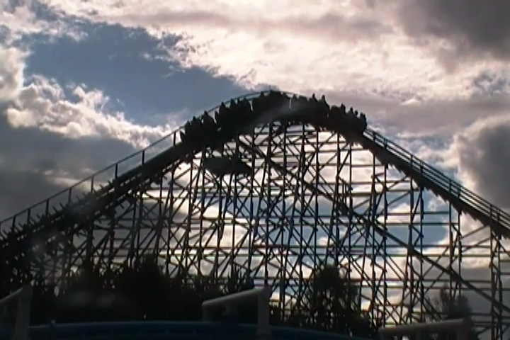
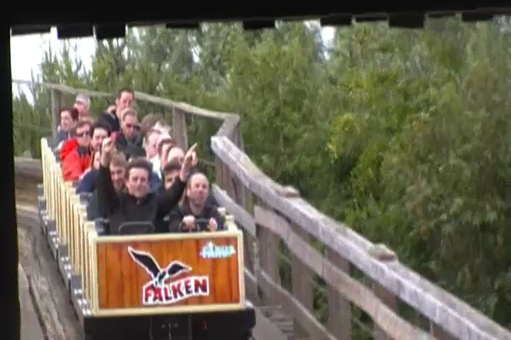
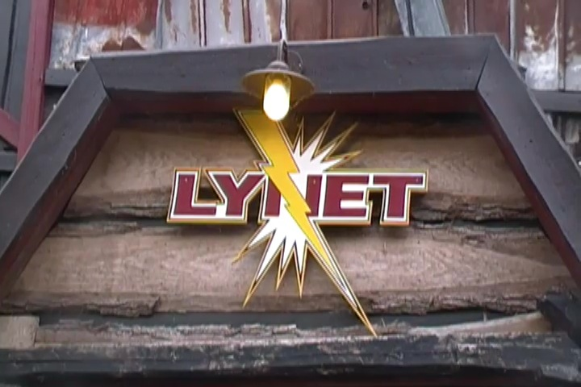
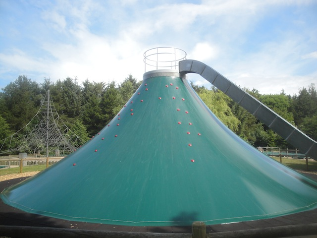
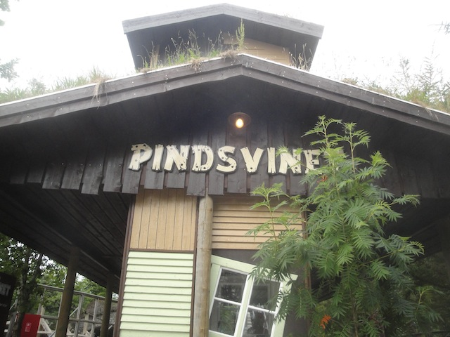
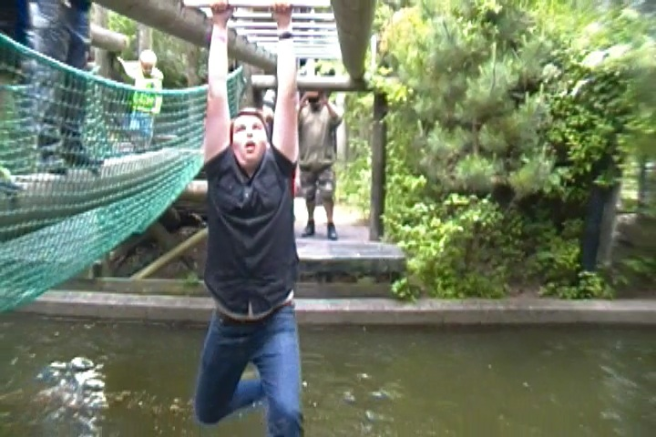

Time for yet another park, and today's park, Farup Sommerland, was good. Well, they all were, but this one was just particuarlly great.
And we have lots of ERT today. First up, the park's mini suspended coaster, Orkanen.
Ooh. Test Seat.
While this may not look like anything special, it's just a really fun ride.
I can plant my ass on this ride all day.
That overbanked turn actually has some decent whip right there. It's a really nice experience.
For some reason, I just LOVE the setting on this coaster. Especially the 2nd half where it's just a bunch of low to the ground turns in the grass and flowers. Something about that just really appeals to me.
Moving on with ERT, we now go to the park's wooden coaster, Falken.
Ok. Somebody needs to shine some headlights on those deer.

Falken is another one of those super rare S&S Wooden Coasters.
On the bright side, this ride has some REALLY good airtime. Just, wow. =)
But on the downside, it is REALLY rough around the turns. Ouch.
Ass goes out of seat, ass falls back into seat.

Even so, it's a great ride that you should definetly check out while visiting Farup Sommerland. I just wish it went in a straight line.

And finally, we close ERT with a ride on Lynet.
Lynet is one of those Gerstlauter launched coasters that quite frankly, are extremely underrated and totally kick ass.
It's got a good launch, great airtime, fun laterals...
And of course, twisty inversions with lots of hangtime.
WEE!!! TWISTY!!!
Oh, and they opened up the cafe for us to buy breakfast during ERT. I can wait till lunch though.
Bow down before AJ!! King of the Playground!!
Hmm. I wonder if I should...Nah. I've got a better place for that.
Come on dude. Nobody wants to see that.
All right. The park is open, so let's get the rest of the credits.
This was good spinning mouse. I mean, this thing SPUN!!!! Thumbs up from Incrediblecoasters. =)
Cha-Ching!!!
Final credit needed at the park. It was a fun Vekoma Roller Skater.
Farup Sommerland is kind of like a big summer camp with roller coasters. As such, it has all sorts of cool random things. Mini Golf doesn't begin to cover it.
Much to David's dismay, you can go horseback riding.
You can also practice your shooting here by shooting BB Guns to practice your aim (I am stunned that this hasn't popped up in all of the Texas Theme Parks).
And as luck would have it, I am the worst shooter on the planet. So even if I do snap and go crazy for some reason, you'll still be safe.
Something I've noticed about Danish Parks. They are extremely dog friendly. They even offer those plastic bags used to pick up your dog's poop.
They even have dog water fountains for when Rover gets thirsty, which is great and all, but I'm kind of annoyed at the fact that they have water fountains for dogs throughout the park, but not a single water fountain for humans. Do I have to drink from the sink to get water over here (I just bought a Coke since I overbudgeted in Danish and Swedish Kroners and still have plenty of both currencies left over)?
Oh look. Another one of those bouncy pillows. Are we gonna stop and jump on it?
Does a bear sh*t in the woods?

They also have one of those crazy triangles to climb.
Don't bother with the triangle slides. They suck. You're better off just jumping off.
Once again, Farup Sommerland has provided a fantastic lunch for us.
As a bonus present, the park decided to give us these special T-Shirts as a present. Thank you guys.
I didn't try this bizzare contraption, but it did look fun.
"Excuse me, but where can I find a place to have my picnic?"

I got all the credits this morning, but everyone else in the group still needed the kiddy credit, so here we are.
Out of peer pressure, I ended up re-riding a kiddy coaster where not only did I already had the credit, but it was bad even by kiddy coaster standards.
We just had to have ourselves a mini marathon on Orkanen. It's just that enjoyable and re-ridable. Hell, we had to leave Neil here cause he simply refused to get off the ride.
God these boats are such a pain in the ass to drive.
"Hey, I gotta have a giant Danish Ice Cream on my last day in Denmark."
Anyone else wanna ride the teacups?
I've heard a lot of good things about the obstacle course at Farup Sommerland. So of course, we have to check it out.
First things first, you gotta go through this maze, which is actually a challenge.
You could rock climb across, or just walk. There's no incentive for this. Perhaps some water should be placed right here. =)
You could get down the hard way...
Or you can go down the fun way.
Don't feel bad about hitting your head Neil. It may hurt, but it doesn't hurt nearly as bad as...

Harrison losing his $900 sunglasses to the water. Why the hell were you wearing $900 sunglasses on a trip like this?
I should probably warn you that that water is full of leeches (not fear-mongering, It actually is).
Don't fall off the zipline. =)
Yeah. This obstacle course is awesome.
Here's our raw footage of all the fun on the obstacle course. =)
"Hey, I may have f*cked up today and cracked my Iphone screen, but at least I didn't lose a pair of $900 sunglasses."
One last ride on Lynet before heading out (there's GREAT ejector air right there).
The trip moves on and it's time for us to leave Denmark and move onto the next portion of the trip.
Sadly, we will not be crossing the Kattegat in the pirate ship.
We were early and had 45 minutes until we boarded the ferry. So being the traveler I am, I ventured off into the small seaside town of Fredrikshavn.
I must admit, Fredrikshavn looks like a nice litle town.
I know some of my non-roller coaster friends were annoyed that I went all the way to Scandinavia and the only cities I really explored were Copenhagen and Helsinki. Well sorry. I love travelling, seeing local stuff, and I squeeze it in whenever I can. Like right now. =)
Why is a victim of Guantanamo Bay in your shop?
"Arr mateys. Are you ready to drink across the seven seas with Captain Shawn?"
Pff. I'm not slowing down for the freaking sidewalk.
Be sure to look for this man in the 2018 World Cup representing the United States.
I love all the beautiful little touches in these small little European towns.
Once again, the statues have predicted the near future.
Well, that was fun exploring Frederikshavn. Time to get on the ferry.
Goodbye Denmark. You're an amazing country and I'm looking foreword to coming back ASAP.
All right. Drive the bus right onto the ferry.
After chatting for a bit outside, we moved inside for dinner and just stayed here for the entire ferry.
Not a fan of most of the food here, but the potatoes here were fantastic.
And of course, I approve of the Chocolate Moose for dessert.
Ross and Joe share an intamate moment.
We arrived in Goteborg around midnight and all the Swedes were out in the street celebrating the Summer Solstice. I so would've joined in if I didn't have to wake up at 4:30 am.